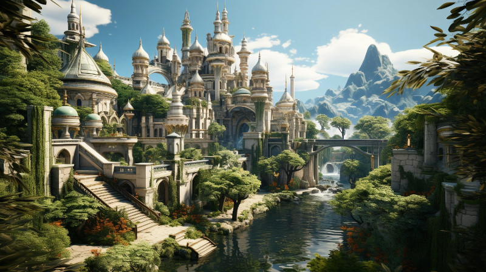

Figure 1: City of Tanquende, the capital of Tanquende
Welcome to the Kingdom of Tanquende, a realm nestled in the far west of the known world. This Elven kingdom is primarily inhabited by the Hallashim, often referred to as the High Elves, who have a rich and storied history in the annals of Naurrnen.
The heart of Tanquende is the City of Tanquende, its magnificent capital, where Elven culture and tradition flourish. Here, amidst the graceful spires and verdant gardens, the Elven Matriarch Mother governs with wisdom and grace, guiding the destiny of her people.
At the heart of the capital stands Laurië Citime, a venerable institution and the oldest library in all of Naurrnen. Within its hallowed halls, ancient tomes and scrolls from bygone eras are meticulously preserved, making it a sanctuary of knowledge and a bastion of Elven heritage. Scholars, historians, and seekers of wisdom from all corners of the realm gather here to study the wisdom of ages past.
Tanquende, like many territories beyond the borders of the Gran Imperio, holds a complex relationship with non-native races, often relegating them to second-class citizenship. However, among the Elven intellectual elite, there is a spirit of acceptance and openness towards outsiders, and some members of the Elven nobility have embraced this perspective as well.
The City of Tanquende, besides being a center of culture and learning, plays a crucial role as a major trade hub in the western reaches of Naurrnen. Its bustling markets and thriving commerce draw merchants, adventurers, and traders from across the land, creating a vibrant tapestry of cultures and opportunities.
The Kingdom of Tanquende, with its rich history, grand traditions, and vibrant trade, stands as a bastion of Elven civilization in the west, where the past meets the present, and where the future is shaped by the wisdom of ages past.